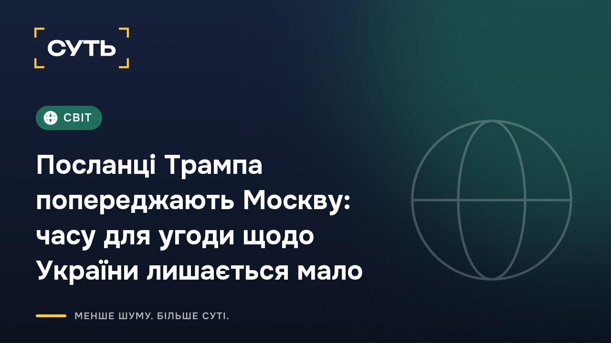

Посланці Трампа попереджають Москву: часу для угоди щодо України лишається мало

За даними Kyiv Independent, спецпосланці США Віткофф і Кушнер попередили Росію та Україну, що нинішній раунд переговорів може бути останньою реалістичною можливістю домовитися до зміни політичної ситуації у Вашингтоні.
- Причина — ймовірний перехід контролю над Конгресом до демократів, які можуть посилити підтримку Києва та розслідувати контакти адміністрації з Кремлем — за словами співрозмовника видання
- Переговори 10–11 листопада пройшли напружено: російська делегація мала жорсткі інструкції і не демонструвала готовності до енергетичного перемир'я — за словами джерел видання
- Міністр закордонних справ США Рубіо неодноразово казав, що Донбас — головне питання перемовин, і що Росія найближчим часом його навряд чи захопить
- Медінський 11 листопада заявив, що «кожен дюйм нашої землі буде повернуто Росії, так чи інакше»
💡 Чому важливо: Від результатів цього етапу переговорів залежить, чи зможе Вашингтон і далі просувати угоду, що визначить подальший хід війни.
Джерела: The Kyiv Independent · hromadske
Ця новина — з Telegram-каналу «Суть.»
Коротко, з першоджерел, без шуму.